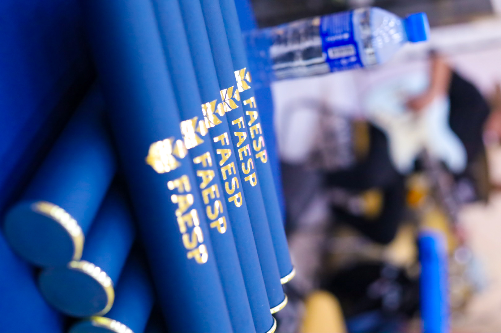
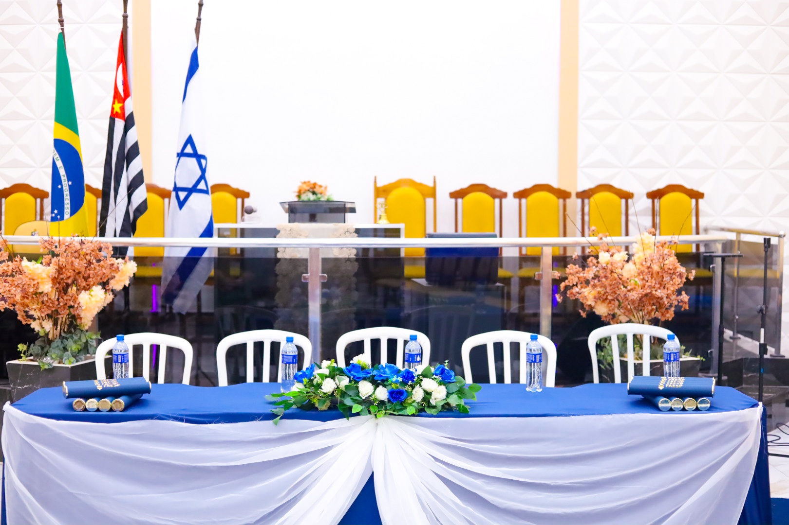
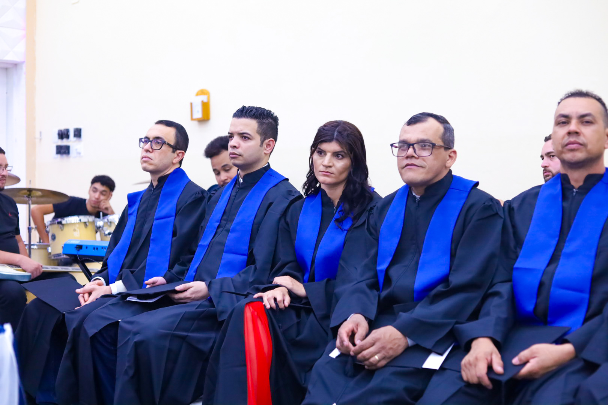

Curso Básico
Formação sólida para iniciar seus estudos em Teologia.
18 meses16 disciplinas
MatrículaR$ 30
MensalidadeR$ 110
Cursos presenciais de Teologia Básico e Médio com excelência acadêmica, propósito ministerial e uma jornada de formação clara.
A estrutura foi simplificada para você comparar duração, investimento e nível de formação sem informações repetidas.
Formação sólida para iniciar seus estudos em Teologia.
Continuidade para quem já concluiu o nível Básico.
Básico + Médio em uma única formação de 30 meses.
O site agora prioriza o que realmente ajuda na decisão: conteúdo, professores, certificação, unidades e inscrição.
Bibliologia, Panorama Bíblico, Teologia Sistemática, Hermenêutica, Homilética e disciplinas complementares.
Professores com experiência ministerial e dedicação ao ensino.
Acesso ao portal do estudante e certificado de conclusão conforme o curso.
Consulte horários e disponibilidade da turma na unidade que melhor atende sua rotina.
Alguns registros de alunos e formandos da FAESP Extensão Guaianases.



Faça sua inscrição pelo formulário oficial ou fale com a equipe da FAESP Extensão Guaianases.